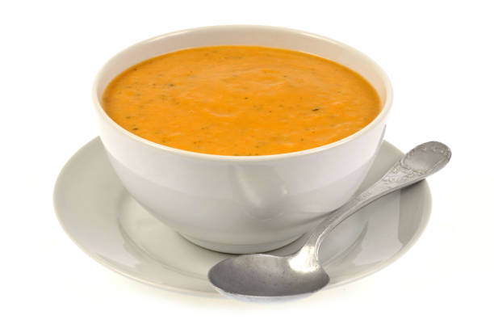

Я Белов Ярослав,мне 19 лет, я студент направления Прикладаная математика и иформатика Сахалинского государственного
университета.
Я прошел 3 семестра и еще раз понял, что выбрал нужное и интересное мне направление. За время учебы я успел побывать в
студсовете и поработать на благо университета.
Говоря о моих хобби, я бы хотел привести в пример готовку. Я пытаюсь совершенствоваться в этом дeле. Я могу проводить много времени за этим даже не замечая времени. Больше всего я люблю готовить супы.
Вот пример простого куриного супа.

Также немного о моих достижениях: